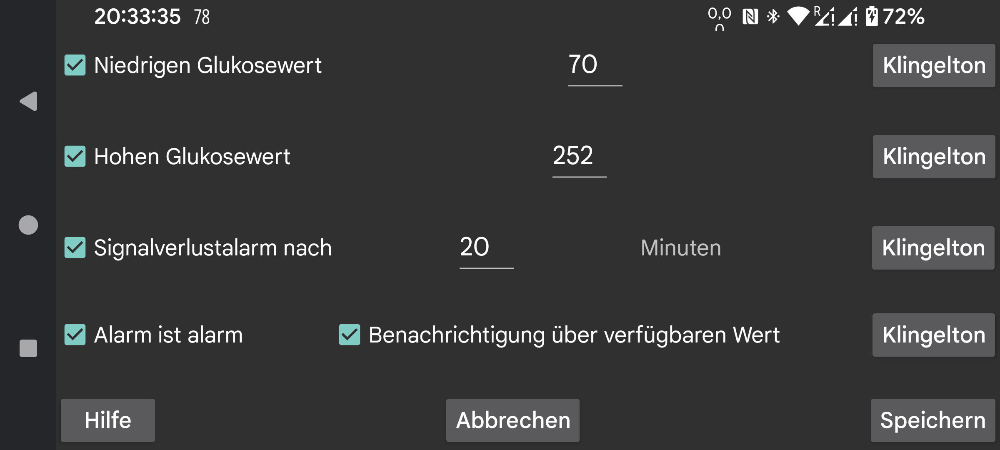

de nl be de fr nl pl ru tr uk zh be de fr it nl pl pt ru sv tr uk zh en
Die über Bluetooth empfangenen Stream-Werte können verwendet werden, um Alarme für niedrige und hohe Glukose einzustellen.
Wert, bei und unter dem ein Alarm ausgelöst werden soll.
Wert, bei und über dem ein Alarm ausgelöst werden soll.
Legen Sie fest, nach wie vielen Minuten ein Alarm ertönen soll, wenn kein Glukosewert über Bluetooth empfangen wird.
Alarme werden beendet , wenn eine der folgenden Bedingungen erfüllt ist:
- Die angegebene Dauer ist abgelaufen;
- Die Kurvenansicht wird berührt;
- Die Android-Benachrichtigung von Juggluco wird berührt (im entsperrten Zustand);
- Schaltfläche "Abbrechen" wird von der Alarmbenachrichtigung in Juggluco berührt.
Manchmal funktioniert der Sensor nicht. Wenn Sie dies einschalten, werden Sie benachrichtigt, wenn der Sensor wieder funktioniert, aber nur, wenn Sie in der Juggluco-App selbst gesehen haben, dass der Wert fehlt. Wenn Sie nur wissen, dass der Wert aufgrund der Benachrichtigung von Juggluco oder seines Zifferblatts gefehlt hat, wird die Benachrichtigung über den verfügbaren Wert nicht aufgerufe
Für jeden Alarm können Sie festlegen, welcher Klingelton wie lange abgespielt werden soll.
Wenn eingestellt, erhält der Klingelton, der für niedriger, hoher und Signalverlustalarme abgespielt wird, die Kategorie "Alarme" in Android. Dies bedeutet, dass in den Android-Einstellungen die Lautstärke mit dem Lautstärkeregler namens Alarms gesteuert wird und die Alarme nicht stummgeschaltet werden, wenn das gesamte Telefon stummgeschaltet oder auf Vibration eingestellt ist. Wenn "Alarm ist alarm" nicht eingestellt ist, wird der Benachrichtigungslautstärkeregler auf Telefonen und der Systemlautstärkeregler auf Samsung Galaxy 4-7 verwendet. Dies gilt immer für den verfügbaren Wert der Benachrichtigung.
Geben Sie an, für welches Profil diese Einstellungen gelten. So können Sie zwischen den Einstellungen für Alarme und Spechen wechseln. Unter Erweitert → Zeitpläne können Sie festlegen, dass ein Profil zu einer bestimmten Zeit automatisch aktiviert wird
Menü mit erweiterten Alarmen: sehr niedrig, sehr hoch, bald niedrig, bald hoch und Sie können Profile so planen, dass sie zu bestimmten Zeiten aktiv werden.